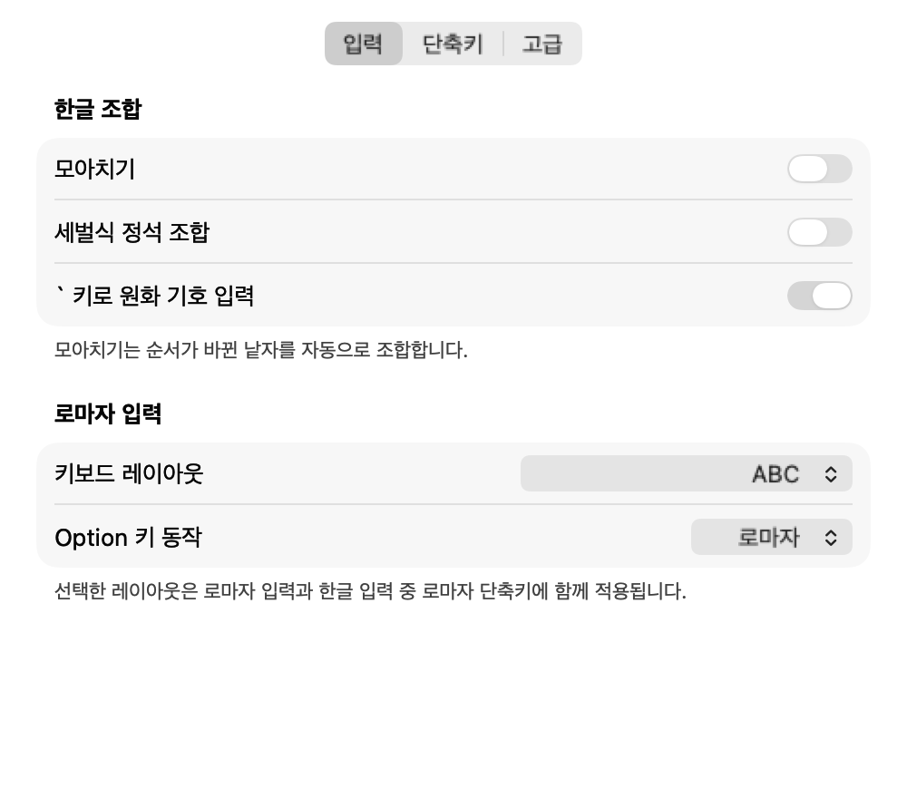
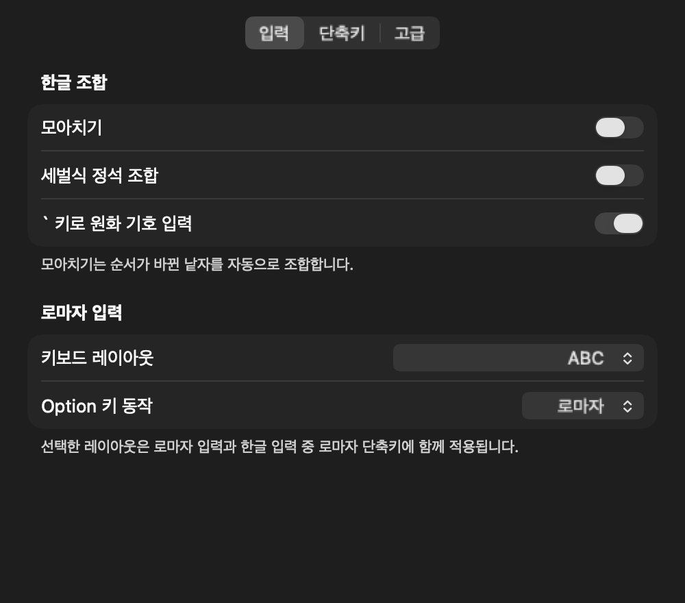

BARAM INPUT METHOD
나의 바람대로, 한글이 흐르다.
구름을 움직이는 바람. 손끝의 의도를 담는 입력.
브랜드 시트 v0.4 · 바람 궤적 B 방향 반영 / 최종 기하 초안
macOS · 시온유엘 패밀리 앱
자연의 움직임과 사용자의 의도가 만나는 이름.
기둥과 두 말림이 한 흐름처럼 이어진다.
바람 그림과 글자를 옆에 붙이지 않는다.
곧고 굵은 기둥, 단순한 두 볼.
16–32 px 단색은 글자의 구조를 먼저 남긴다.
두 획의 끝이 안쪽으로 부드럽게 말린다.
128 px 이상에서 손으로 그린 흐름이 드러난다.
현재 프로젝트는 구름 입력기를 기반으로 한 독립 구현이다. 과거 ‘한글입력기 바람’과 공식 계승 관계는 확인되지 않았다.
이름 사용은 사용자 결정으로 확정했다. 공개 전 상표 확인·원 개발자 연락 시도·역사적 프로젝트 크레딧을 남긴다.
세 획이 하나의 흐름처럼 만나 B를 그리고, 겹친 두 공간은 ㅂ을 은근히 떠올린다.
128 격자 / 마스터 획 9 / 작은 크기 획 12.
살짝 휜 기둥 → 위 말림 → 넓은 아래 말림.
B가 먼저 읽히고 ㅂ은 보조적인 이야기로 남는다.
긴 곡선과 열린 말림을 보존한다.
입구를 덜고 내부 공간을 확보한다.
16 / 32 / 확대
단색 구조 비교
별도 비교판에서 ₿·일반 B·일반 ㅂ과 16/18/32/128 px로 나란히 본다.
이는 시각 비교 자료이며 사용자 인지 실험 결과는 아니다. 기하 승인 전.
한 가지 강조색과 읽기 쉬운 중립색. 의미 색은 성공·주의·오류 역할로 나눈다.
| 토큰 / 역할 | 전경 | 바탕 | 대비 | 적용 |
|---|---|---|---|---|
| accent / on-accent | #FFFFFF | #14675F | 6.70:1 | 로고 면·주요 브랜드 단추 |
| ink / bg | #172C2C | #F6F4EE | 13.32:1 | 문서 제목·본문 |
| ink-2 / bg | #5D6E68 | #F6F4EE | 4.90:1 | 설명·캡션 |
| mint / night | #A9E2CD | #162623 | 10.82:1 | 어두운 브랜드 면 강조 |
| ok · warn · error | #14675F · #6B4C15 · #A92B35 | #FFFFFF | 별도 on- 짝 | 아이콘+글자+연한 면으로 상태 표현 |
안개색은 면·구분용. 온기색은 작은 주석에 제한한다. 대비 값은 위의 불투명 색 조합 실측이다.
실제 AppKit 창·메뉴는 labelColor 등 의미 색상과 사용자의 시스템 강조색을 우선한다.
현재 GureumChordLab 환경설정 렌더. 이름과 색의 제품 전환은 후속 단계다.

라이트 · 입력 / 단축키 / 고급

다크 · 시스템 의미 색상 유지
Mac 창 틀·메뉴·설정 목록은 네이티브.
앱 창은 툴바 탭, prefPane은 세그먼트를 쓴다.
고정 너비 500 pt
내용에 맞춘 탭별 높이
좌우 20 pt / 행 최소 34 pt
작은 네이티브 팝업·버튼
오프스크린 뷰 렌더와 실제 창 빌드.
실기 메뉴·VoiceOver 점검은 남아 있다.
원본: G007 검증된 Preferences.prefPane의 CALayer 렌더. 데스크톱 전체 캡처나 가상 제품 화면이 아니다.
문장은 시적으로, 조작은 또렷하게. 역할마다 서체와 크기를 고정한다.
바람 입력기
display / 워드마크 · Apple SD Gothic Neo Bold
손끝의 바람, 글이 되다.
브랜드 문장 · AppleMyungjo, 큰 크기에 한정
| title | 13 pt semibold | AppKit 시스템 |
| body / label | 13 pt regular | 설정 이름·선택값 |
| support | 11 pt regular 이상 | 보조 설명 |
Apple 글꼴 파일은 배포하지 않는다. 확정 워드마크는 외곽선 자산으로 내보낸다.
keyboard · chevron.down · gearshape
Mac 메뉴·도구 막대와 같은 언어. 이모지를 아이콘으로 쓰지 않는다.
그림은 사용 규칙 예시. 실제 앱의 포커스·메뉴·VoiceOver 의미는 네이티브 컨트롤이 담당한다.
간격 4·8·12·16·20·24·32
모서리 8 / 12 / 20 / pill
현재 설정 그룹의 10 pt는 기존 구현값으로 별도 기록.
형태를 꾸미기보다 읽기와 동작을 유지한다.
기둥·두 볼·말림의 비례를 늘이지 않는다
마스터와 작은 크기 전용 원본을 쓴다.
작은 획을 임의로 더하거나 빼지 않는다.
바람 그림·그림자로 흐름을 덧붙이지 않는다
바람은 이미 두 말림의 구조 안에 있다.
기본 앱 아이콘도 한 가지 획색을 쓴다.
색만으로 상태를 전달하지 않는다
글자 4.5:1 / 기능 아이콘 3:1.
체크·선택값·라벨을 함께 쓴다.
‘완벽한’, ‘가장 빠른’, ‘모든 앱 지원’은 검증 없이 쓰지 않는다.
불리한 사실을 먼저 알리고, 확인한 범위와 다음 행동을 말한다. ‘자동 순서 교정’과 ‘물리적 동시입력’을 혼동하지 않는다.
정식 제품 전환은 앱·입력 소스·설정·배포물을 한 번에 맞춘다.
바람 입력기
1024×1024 정사각 마스터
기본은 종이색 단색 / 온기색은 선택안
OS 마스크 전제 / 별도 단색 레이어
메뉴바 16·18 pt는 곧은 기둥·단순한 두 볼·굵은 획의 단색 원본. 긴 입구와 완전한 나선을 덜어낸다.
공식 배포 도메인 — 사용자 확정.
설치 페이지에는 버전·지원 환경·서명 상태·복구 방법을 함께 둔다.
ChordLab → 입력 검증 → 설정 보존 → 이름·아이콘·설치물 전환
남은 일: 마크/색 최종 승인, 16–1024 px 자산, 공식 명칭·상표 확인, 원 개발자 연락 시도, 실제 메뉴·VoiceOver·두 Mac 검증.